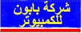
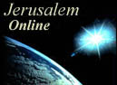
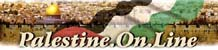

what's new?
what's new?
advertise here

Advertisement: Click here


|


Advertisement: Click here
INTERNET & COMPUTERS
NOTE: Palestinian Internet Services and Service Providers are not part of the Golden Olive Awards system. Primarily to enable the Birzeit Webmaster to avoid being met in dark alleys by disgruntled colleagues.
Across Borders Project: http:/www.acrossborders.org the Across Borders Project was intitiated in 1999 by the Birzeit University Information Technology Unit. It aims to introduce Internet technology into Palestinian refugee camps with the aim of linking Palestinian refugees through the web and establishing camp websites in both Arabic and English. The first centre was opened in Deheisheh Refugee Camp near Bethlehem on July 24, 1999 Added to Complete Guide: 4 August 1999. Top of page.
Alami Electronics, Jerusalem: http://www.alami.net/ Alami Electronics is a Jerusalem based computer services company offering Internet connections, website hosting and computer sales, as well as the repair of major brand names of TVs VCRs and Camcorders. An attractive site with many links to encourage Palestinians to explore the Internet. Added to Complete Guide: 14 February 1998. Top of page.
Al Carma Internet Centre: http://www.al-carma.com/ One of the new internet cafes in Ramallah. Not a lot of information on their site. Added to Complete Guide: 5 May 1999. Top of page.
Assali Computer Services, Ltd.: http://www.assali.com/ - ACS Ltd. is a Jerusalem based computer services company focusing on: LAN & WAN design, installation and maintenance, Systems Development & Internet Services. They used to have a useful website but now there is only a picture of a door and nothing else. Ok, it is an attractive door. Maybe they are updating?Review last updated: 16 September 1999. Top of page.

Baboun Computers and CDs: http://www.baboun.com/ - Baboun sells computers and software in the Bethlehem area. A one-page "contact us" website with the message "If you're happy we're happy". It's been in this state for over 2 years now. Added to Complete Guide: 6 February 1997. Review last updated: 16 September 1999. Top of page.
Bailasan, Palestinian Internet Services Company: http://www.bailasan.com/ - Nigel Parry reviewed this site about a year ago and said that in his opinion the site should have been titled, How To Destroy Your Public Image Single-Handed 101. Unfortunately things have not got any better. Despite the claim that Bailasan aims to "increase the amount of Palestinian information on the internet" they have removed all of the sections that promised any information leaving a 3 page site. Perhaps most indicative of their attitude towards information is their Palestine Directory, which looks very, very familiar. I mean - link by link, section by section familiar. However they lack graphics, reviews or design and are out of date by about 4 months - and I even send them the updates! Added to Complete Guide: 6 February 1997. Review last updated: 2 December 1998. Top of page.
Baraka, the Palestinian NGO Network: http://www.baraka.org/ - Baraka, the Palestinian NGO service provider, launched its website in mid-1996. Information is provided about PNGO (the Palestinian NGO network), a few other NGOs, and links to other Palestinian sites. An e-mail address list for all its member organisations would be welcomed, as would homepages for all the NGOs that in the country. Review last updated: 19 December 1997. Top of page.
CD House: http://www.alami.net/~cd-house/ - OK this isn't quite legal but CD House is one of the the many places in Palestine for CDs that aren't "original". See what they offer on their website (which also seems to be copied from somewhere according to the title of the site).Added to Complete Guide: 20 September 1999 Top of page.
Good Shepherd Engineering and Computer Company: http://www.gsecc.com/ - Well after being under construction for so long I was interested to see them come online. At first glance it seemed there was a lot of information but a closer look revealed that all the menu links opened up other external websites in the main window. I guess that's one way to get around designing a website.Added to Complete Guide: 17 March 1997 Review last updated 16 September 1999 Top of page.
Hally: http://www.hally.net - Hally is one of the news ISPs in Palestine and they have quiet a large spread around the West Bank. Added to Complete Guide 16 September 1999 Top of page.
Hebron Network: http://www.hebronet.com - Established in 1998, Hebron Internet Network is the first ISP in the Hebron Area. An attractive site, available in both Arabic and English they also offer webhosting and webdesign. Added to Complete Guide 16 September 1999 Top of page.
Information Technology Special Interest Group (ITSIG): http://www.birzeit.edu/national/itsig/ - In its own words, the non-official body ITSIG aims, "to develop an atmosphere of coordination and cooperation between the various bodies and individuals involved in the development of IT in Palestine; to create an advisory body for IT projects; to influence policy makers in IT related issues and developments". ITSIG has become more active in the last 6 months. The website has been recently redesigned by Palnet's Systems Adminstrator Mustafa Deeb, and it promises much. Added to Complete Guide: 2 July 1997. Review last updated: 16 September 1999. Top of page.

Jerusalem Online: http://www.jrol.com/ - An Internet service provider in Jerusalem, Jerusalem Online offers Internet connections and website design. An attractive website with a members-only support area. Added to Complete Guide: 16 February 1998. Top of page.

Palestine.On.Line: http://www.p-ol.com/ - A really impressive site has recently been launched by Palestine Online (during 1999 that is). Using a database system, Palestine Online offer a very useful Palestine Directory which enables you to find emails of people living in Palestine, domain names in Palestine, a yellow pages and a bank's directory. They also pioneered Arab Supernet, a business directory which received website of the month in March 1999. And of course they offer ISP services at reasonable rates. Definitely worth a visit.Added to Complete Guide: 6 February 1997. Review last updated: 16 September 1999. Top of page.
Palestinian Academic Network (Planet): http://www.planet.edu - Redesigned in 1998 the website is a dramatic improvement over the previous one. The Palestinian Academic Network at Al-Quds university is "a leading Educational Internet Service Provider in Palestine. Planet links universities, colleges as well as schools with the World Wide Web. It also links Research Centers and some non-governmental organizations. Planet links most of the Palestinian ministries using wireless means of communication such as VSAT and microwave devices." Review last updated: 16 September 1999. Top of page.
Palestinian Internet Services: http://www.p-i-s.com/ - An ISP in Gaza which according to them have 250 dialup users. Added to Complete Guide: 20 September 1999. Top of page.

Palestinian.Net: http://www.palestinian.net/ - An Internet service provider offering dial-up access and webpage design. Still under construction.
Added to Complete Guide: 16 February 1998. Top of page.
PalGate: http://www.palgate.com - PalGate offers Web services to the non-NGO sector, including web page hosting and virtual domain names. Speed is assured by a US-based Web server connected to the Internet by a triple DS-3 connection (each 45 MB/s) and T-3 lines connected to Sprint, MCI, and UUnet. Palgate's network is monitored 24 hours a day to
ensure that it is up and running. Their website is currently under construction. Added to Complete Guide: 17 November 1996 / Review last updated: 16 September 1999. Top of page.
Palnet: http://www.palnet.com - A private company, Palnet arrived on the scene offering e-mail and a Web connection to individuals and organisations for only $25 a month with unlimited access. PALNET's website has developed its links, although navigating through them can be a little boring, as only the titles of websites are offered with no reviews. The site also offers an interesting guide to Palestine's economy for those wanting to invest here, as well as government and business contact addresses. PALNET were at the Palestine International Festival 1996 and 1997, offering opportunities for visitors to browse the Web, and hopefully will make a reappearance this coming year. A dynamic company with 470 individual and institutional customers at the November 1996 count, rising to 852 by August 1997. Palnet offers a 128K leased line to Birzeit University and various Palestinian ministries, soon to be upgraded to at least double the speed. Review last updated: 19 December 1997. Top of page.
Palnet@K5M: http://www.palnet.com/k5m/ - The first Palestinian Internet Cafe, based in Ramallah, a joint project between the premiere Internet Service Provider - Palnet - and K5M, Ramallah's oldest restaurant-cafe. Four multimedia computers offer users the chance to find out what it's all about at cheap rates. The pizzas and food are great in this restaurant, with the Birzeit Webmaster's recommendation being the Venetian, allowing for the occasional defection to a Hawaiian. The homepage has both K5M restaurant and Internet price menus, photos of the cafe and a list of K5M's catering services. In case you were wondering, K5M's name comes from the 6 brothers that own the restaurant - 5 of them have names starting with M and one with K. Or is it the other way round? No matter, visit the homepage and then visit the cafe! Added to Complete Guide: 17 May 1997. Review last updated: 19 December 1997. Top of page.
Palseek: http://www.palseek.com - This is an Arabic language guide to the Palestinian internet. Categories include banks, universities, non-governmental organizations, tourism, culture and computers. You need to have some kind of Arabic language browser to see this otherwise you'll get gibberish. Added to Complete Guide: 20 September 1999. Top of page.
Palsoft Internet cafe: http://www.pal-soft.com - One of the new internet cafes in Ramallah and one of the cheapest. It's always packed with people and is a good place to go if you want to check your email. Simple page available in both Arabic and English.Added to Complete Guide: 20 September 1999. Top of page.
United Nations Development Programme (Programme of Assistance to the Palestinian People): http://www.papp.undp.org - UNDP (PAPP) became interested in the idea of building a Palestinian research and academic network around 1994, sponsoring and training universities in how to provide e-mail to their faculty. The website is a good current, reference point for those interested in this work and the wider work of the United Nations. Formerly attached to the Internet via the Hebrew University, UNDP now offers its service through a connection with IBM. UNDP supplied Birzeit University's webserver's connection, and contributed substantially to the development of the Birzeit's World Wide Web Project through equipment donations, just a few examples of the outstanding service it has provided to the Palestinian educational sector. Review last updated: 19 December 1997. Top of page.
Zaytona Soft: http://www.zaytona.com - A private company offering computer consultancy and an Internet connection in Nablus, and some training. Their website has undergone some work recently and it does have some useful phone numbers and addresses but not much more.Added to Complete Guide: 17 November 1996 / Review last updated: 16 September 1999. Top of page.
WEBSITES THAT ONCE WERE BUT ARE NO LONGER
Gamasoft Online: http://www.gamasoft.com/ - This website was first launched in 1996 making it one of the first Palestinian websites. Now it leads you to a Korean language website.Added to Complete Guide: 27 August 1996 / Review last updated: 16 September 1999. Top of page.
|
CATEGORY INDEX:
 home home
page
academic
& research
arts &
culture
business &
economy
government
& services
human
rights
industry &
products
internet &
computers
news &
media
online
memorials
organisations
& associations
personal
homepages
political
parties
schools &
universities
tourist
information
recommended
reading
website of
the month
golden
olive awards
palestine's
websites at
a glance
palestinian
mailing lists
key peace
process links
israeli
websites
|